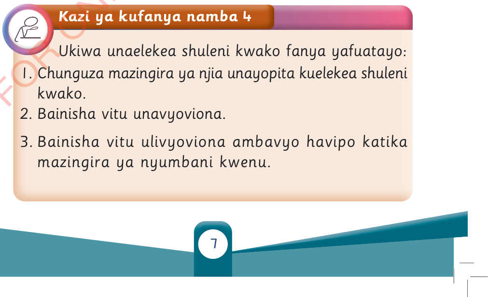

Kazi ya kufanya namba 4
Ukiwa unaelekea shuleni kwako fanya yafuatayo:

1. Chunguza mazingira ya njia unayopita kuelekea shuleni kwako.
2. Bainisha vitu unavyoviona.
3. Bainisha vitu ulivyoviona ambavyo havipo katika mazingira ya nyumbani kwenu.